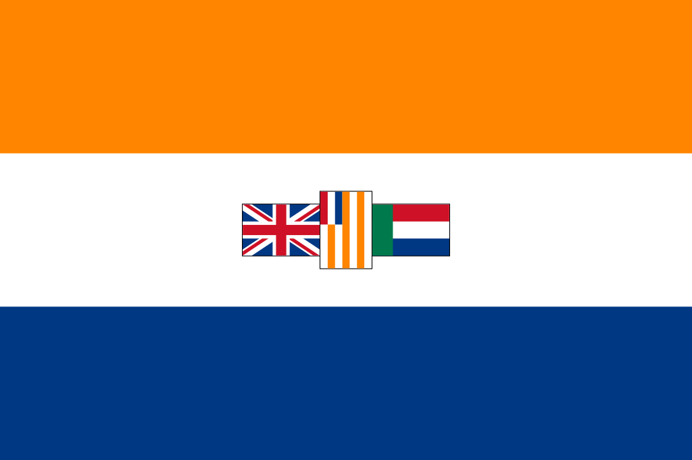

Текущая ситуация
Апартхейд - режим африканерских националистов, при котором все довольствия для населения делились неравно согласно расовой принадлежности. В 1994 г. апартхейд пал, и местное население получило равные с белыми права.

Данные флаги отражают эту смену парадигм. До сих пор оранжево-бело-синий флаг считается национальным флагом африканеров, а приложенный вариант был официальным флагом ЮАР при апартхейде. Однако правительство АНК сменило его на многосимволичный и многоцветный, фактически полностью переделав. Однако с падением апартхейда не исчезли межрасовые конфликты.
До сих пор наибольшим благосостоянием в стране обладает белое население. Причин этому много, однако правовая безграмотность недавних обитателей бантустанов ведёт к тому, что чернокожее население пытается решить проблему социального неравенства наиболее грубым способом - насилием. Множество организаций, выступающих как защитники африканерской национальности, говорят об обратной дискриминации, проводимой правительством и таким образом помогающим рядовому населению. Ответом белого населения было создание политических партий, некоторые из которых даже требуют независимости для своего народа. Проблема этого проекта состоит в том, что африканеры нигде в стране не образуют большинства, если не учитывать цветное население. Таким образом, проект обречён серьёзно задеть интересы чернокожего населения.
Проблема межрасовых конфликтов в ЮАР нередко привлекает внимание других стран, и зачастую их позиция в нём определяется их идеологией. Правые политики всецело поддерживают африканеров, считая обвинения правительства ЮАР в проведении политики чёрного национализма оправданными. Другие считают, что убийства белых фермеров в ЮАР не связаны с обратной дискриминацией, а жертвами грабежа африканеры становятся из-за того, что в среднем богаче среднестатистического азиата или чернокожего в этой стране. В таких условиях и существует африканерская нация.
Главная страница.
Ссылка на восьмёрки